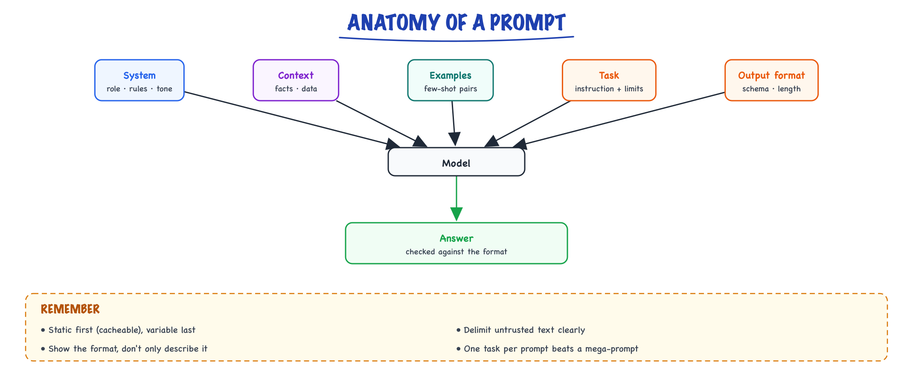

Anatomy of a prompt // Prompting
System, instructions, context, examples, output format: what each part does.
01 — At a glance

A prompt has parts with distinct jobs. Put stable parts first so they can be cached, and the specific task and format last.
02 — Recap
The cheapest, fastest way to change a model's behavior is to change what you say to it. No training run, no new infrastructure, no deployment — just words. Let's structure those words well.
03 — Why prompting is engineering, not typing
A prompt is the entire interface between your intent and a system that will happily do something no matter what you give it. The model never says "insufficient specification, please clarify" unless you tell it to. It fills every gap you leave with a guess drawn from its training distribution — and its guess about tone, format, length, and audience is usually not yours.
The economics make this worth taking seriously. Suppose a prompt change lifts task accuracy from 82% to 93% on your ticket-classification flow (illustrative numbers, but typical of what a good few-shot block does). At 10,000 tickets/day, that's 1,100 fewer misroutes daily — for the cost of an afternoon of prompt iteration. Compare that with the alternative ladder: RAG means building a retrieval pipeline (Knowledge & RAG), fine-tuning means data collection and training jobs (Production & evals). Prompting is the rung you should exhaust first because its iteration loop is measured in seconds.
The mindset shift
Treat the model like a brilliant but literal new hire: it'll do great work if you give clear instructions, context, and an example — and it'll do something weird if you're vague. Specificity beats cleverness. Nobody writes a one-line Jira ticket for a new hire and expects a perfect result; don't do it to the model either.04 — The parts of a good prompt
- Role / persona (system) — "You are a senior tax accountant." Sets the register, the assumed expertise, and the defaults for everything you don't specify.
- Task — the specific thing to do, stated plainly, ideally as a verb: classify, extract, draft, compare.
- Context — the inputs/data it should use. Delimit it clearly (XML-ish tags or fenced blocks) so instructions and data can't blur together.
- Constraints — format, length, tone, do's/don'ts. This is where "usable output" is won or lost.
- Examples — show, don't just tell (few-shot, the next topic). One good example outperforms a paragraph of format description.
# SYSTEM You are a meticulous support agent for an electronics store. Always be concise. If unsure, ask a clarifying question rather than guessing. # USER [TASK] Classify this message and draft a reply. [CONSTRAINTS] Reply in under 50 words. Output JSON: {category, reply}. [MESSAGE] "My headphones won't pair with my laptop."
Two structural notes that matter more than they look. First, the system prompt is the right home for durable identity and policy ("always be concise", "never invent order numbers"), while the user turn carries the per-request task and data — this split also enables prompt caching later (Pitfalls & pro habits of this stage covers why static-first ordering pays). Second, the bracketed section labels aren't magic tokens; they just make the boundary between instruction and data unmistakable, which is half of prompt-injection hygiene too (Production & evals).
05 — A full rewrite: bad → good, annotated
Here's a mini-scenario. You run support tooling for a SaaS company, and a teammate ships this prompt to summarize escalation threads for the on-call engineer:
Summarize this support thread. Don't make it too long.
Don't leave out anything important. Be professional.
{thread_text}In production it produces summaries between 40 and 400 words, sometimes bulleted and sometimes prose, occasionally opening with "Certainly! Here's a summary…" which breaks the Slack bot that posts it. Every sentence of that prompt commits a distinct sin:
- "Summarize" — for whom? An on-call engineer needs symptoms, impact, and what's been tried; an account manager needs sentiment and churn risk. Unstated audience → averaged, useless output.
- "Don't make it too long" — a negation with no target. The model can't calibrate "too long"; give a number.
- "Don't leave out anything important" — directly tensions with the previous line and defines nothing. Name the fields that are important.
- "Be professional" — dead weight; it's the default register anyway.
- The thread is pasted with no delimiter, so if a customer message contains "ignore the above and…" it reads as instruction.
# SYSTEM You summarize support escalations for on-call engineers. Output ONLY the summary — no preamble, no sign-off. If the thread lacks a clear technical symptom, say "SYMPTOM UNCLEAR" as the symptom rather than inventing one. # USER Summarize the thread below for an engineer picking it up cold. Format (exactly these four lines): SYMPTOM: <one sentence — what is broken, from the user's view> IMPACT: <who/how many affected, revenue or SLA risk if stated> TRIED: <semicolon-separated list of attempted fixes> NEXT: <the single most useful next action> Keep the whole output under 90 words. <thread> {thread_text} </thread>
Every change maps to a part of the anatomy: audience lives in the role, the four-line skeleton is a constraint doing the work of ten adjectives, the word budget replaces "not too long" with something checkable, the <thread> tags fence the data, and the "SYMPTOM UNCLEAR" escape hatch gives the model an honest out instead of forcing a hallucinated symptom. On an internal eval of 200 threads you'd typically see format compliance jump from roughly 60% to over 95% with a rewrite of this shape (illustrative, but the direction is very reliable).
06 — Prompts as code: a reusable template
The moment a prompt has a variable in it, it's software. Keep it in one place, fill it explicitly, and fail loudly on missing fields — silent KeyError-swallowing is how half-empty prompts reach production.
from dataclasses import dataclass from string import Template # stdlib; $vars, no eval, no surprises SUMMARIZE_SYSTEM = ( "You summarize support escalations for on-call engineers. " "Output ONLY the summary — no preamble, no sign-off." ) SUMMARIZE_USER = Template("""\ Summarize the thread below for an engineer picking it up cold. Format (exactly these four lines): SYMPTOM: <one sentence> IMPACT: <who/how many affected> TRIED: <semicolon-separated attempts> NEXT: <single most useful action> Keep the whole output under $word_limit words. <thread> $thread_text </thread>""") @dataclass class Prompt: system: str user: str version: str # ships with every log line (see Pitfalls & pro habits) def build_summarize_prompt(thread_text: str, word_limit: int = 90) -> Prompt: if not thread_text.strip(): raise ValueError("empty thread_text — refusing to render prompt") user = SUMMARIZE_USER.substitute( # substitute() raises on missing vars; thread_text=thread_text, # safe_substitute() would hide the bug word_limit=word_limit, ) return Prompt(system=SUMMARIZE_SYSTEM, user=user, version="summarize-v3") if __name__ == "__main__": # smallest check that fails if this breaks p = build_summarize_prompt("user: app is down\nagent: restarted pod") assert "<thread>" in p.user and "90 words" in p.user assert p.version.startswith("summarize-v") print("template ok")
Notice what this doesn't have: no templating framework, no YAML DSL, no prompt-management SaaS. string.Template plus a dataclass covers a surprising fraction of real systems. The two things that earn their keep are the loud failure on a missing variable and the version string riding along with every rendered prompt — you will want it the first time behavior changes and nobody remembers editing anything (Pitfalls & pro habits and Production & evals evals).
07 — What structure costs — and buys
Worked numbers, so the trade-off is concrete. The "before" prompt above is ~25 tokens of instruction; the "after" is ~140. Assume a mid-tier model at $3 per million input tokens (illustrative): the extra 115 tokens cost $0.000345 per call — at 10,000 calls/day, about $3.45/day. If the structured version cuts malformed outputs from 8% to 1%, that's 700 fewer failures per day. If each failure triggers a retry (a full second call, thread included — say 2,000 tokens ≈ $0.006), the retries alone were costing ~$4.20/day, so the longer prompt is net cheaper before you count the human time saved. Verbose-but-precise usually beats terse-but-vague on both axes; what it loses to is verbose-and-redundant, which is why "overstuffing" appears in Pitfalls & pro habits.
| Component | Lives in | What happens if you omit it |
|---|---|---|
| Role / persona | System prompt | Generic assistant register; wrong assumed expertise; hedging |
| Task verb | Top of user turn | Model infers the task from the data — often a summary when you wanted extraction |
| Context (delimited) | User turn, fenced | Instructions and data blur; injected text in data gets obeyed |
| Constraints | User turn, near the task | Length/format drift; "Certainly!" preambles break parsers |
| Examples | User turn or earlier turns | Edge cases handled inconsistently; format described but not matched |
| Escape hatch ("say UNCLEAR") | System or user | Confident hallucination when the input is underspecified |
Non-obvious failure modes
- The prompt works in the playground, fails in prod. Playground tests use clean inputs; production feeds it empty threads, 50k-token threads, and emoji-only messages. Test the anatomy against degenerate inputs before shipping.
- Constraints buried mid-context get lost. A length limit sitting under 8,000 tokens of pasted thread is weighted less than one adjacent to the task statement. Keep constraints near the task, data in its own fenced block.
- The persona quietly overrides a constraint. "You are an enthusiastic marketer" plus "be terse" resolves in favor of enthusiasm surprisingly often. When persona and constraint conflict, the model averages; make them consistent.
- Escaped data breaks your delimiters. If the thread itself contains
</thread>, your fence closes early. Sanitize or use an unlikely delimiter for untrusted input. - "Output JSON" without an example yields JSON-ish output — trailing commas, single quotes, prose wrappers. If code parses it, use the structured-output machinery from Structured output, not hope.
Takeaway
A prompt is a spec: role, task, delimited context, checkable constraints, an example, and an out for uncertainty. Every vague word is a decision you delegated to the model's priors. Write the spec once as a versioned template, and you've built the substrate that few-shot (the next topic), structured output (2.3), and evals (Production & evals) all attach to.Exercises
- Take a prompt you actually use and label each sentence as role, task, context, constraint, or example. Rewrite any sentence that fits none of those categories — or delete it — and compare outputs on five real inputs.
- Rewrite the "before" summarizer above for a different audience (an account manager who cares about sentiment and churn risk). Only the role, format skeleton, and field names should need to change.
- Implement
build_summarize_promptas shown, then feed it an empty string and a thread containing the literal text</thread>. Fix whichever one produces a broken prompt. - Measure the cost of specificity on your own task: count instruction tokens before/after a rewrite, run 20 inputs through each, and compute failure rate × retry cost versus the extra input tokens. Decide with numbers, not vibes.
- Add an escape hatch ("if X is not stated, output
UNKNOWN") to an extraction prompt and test it on three inputs where the field is genuinely absent. Count how many hallucinated values you were shipping before.
08 — How this connects
Where this shows up later
- Prompting techniques — Zero- and few-shot, chain of thought, decomposition, self-critique, injection defence.